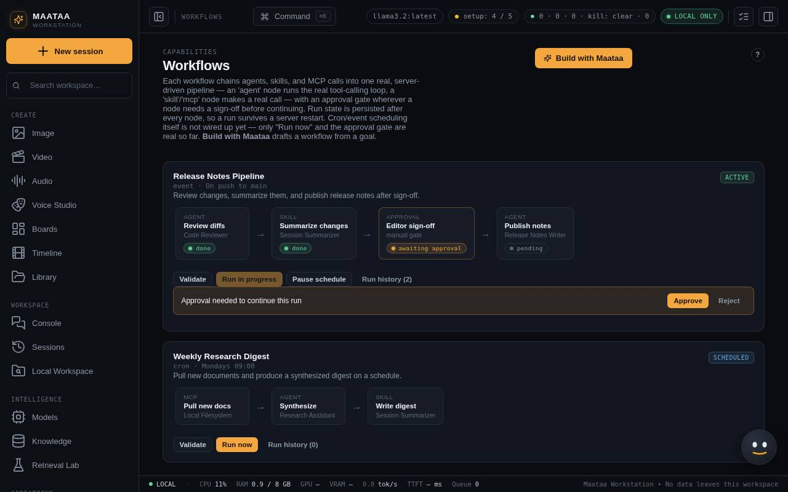

Workflows
Chain agents, skills, tool calls and sign-off steps into a repeatable process that survives restarts. Build one from a goal, test it and approve it.
A workflow is a straight line of steps. Each step gets the previous step's output:
| Step | What it does |
|---|---|
| Agent | Runs an approved agent with the step's label as its instruction |
| Skill | Runs a skill on the previous output (for example Summarize, or "Translate to Hindi") |
| Tool | Lists files or shows git status through a connected tool server |
| Approval | Stops until a person presses Approve or Reject |

Run a workflow
Press Run now. The server steps through the workflow and saves progress after every step, so a run keeps going if you close the window and resumes after a Maataa restart (the step that was running starts again). At an approval step the card shows Approval needed: Approve continues, Reject stops the run. Validate checks that every step points at something that exists. Run history lists past runs.
Build a workflow with Maataa
- Press Build with Maataa on Workflows and describe the job from start to finish, for example "Summarise the new documents, get my sign-off, then translate the digest to Hindi".
- Maataa lines up steps from installed agents, skills and the Filesystem or Git servers, drafts a new agent for any step nothing installed covers (up to three), and is told to put a sign-off before anything that publishes, sends, deletes or changes files.
- The draft is marked Draft. Test run runs it; a successful test run also counts as a test of the draft agents in it.
- Approve those agents on Agents, then Approve workflow. Discard draft removes the workflow and the draft agents it created; approved agents are kept.
Limits
- Schedules (cron or events) shown on example workflows are not wired up yet; use Run now, or an automation to run a workflow on a schedule.
- A restart cannot fix an unavailable model, a disconnected tool server or a rejected approval.
- Treat any step that publishes, deletes or changes files as a place for a sign-off step.